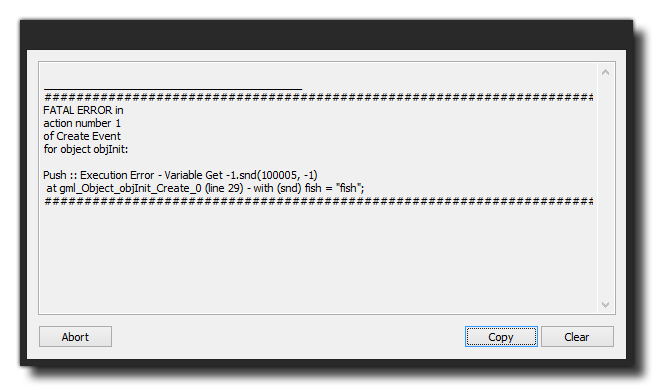
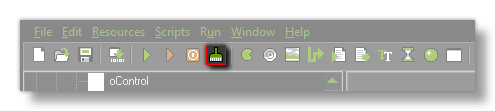
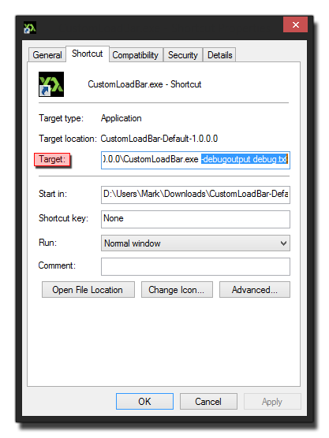

Debugging
This section outlines the debug tool and how to
correct and detect errors in your game.
GameMaker: Studio has a built-in programming language
called GML, and once you become more familiar with how
GameMaker works, you will want to use it to its fullest
extent, meaning that you will need to program aspects of your game
in this language.
However, when programming code it can be very easy to make mistakes
- using the wrong variables, passing the wrong arguments, or using
the wrong functions - which are not always detected by the syntax
checker that is included with the script editor (for more
information on the script editor see Scripts). This means
that these mistakes will only become apparent when you actually run
your game, and even then it can sometimes be difficult to know
exactly what is going wrong! It can therefore be of vital
importance to know how your game is performing on the chosen
device, as well as see what instances are in the room, what global
variables have been created and a whole host of other details.
Now, you can check a lot of these things yourself by adding in
"debug code" to your games to display on-screen the information you
require, or that shows messages when there is an error, but this is
often a lot of work and if you aren't sure where the problem is in
the first place then it can be a time consuming case of trial and
error to track down your bug. For that, GameMaker: Studio
has a special run mode called Debug Mode which will start
the Debug Module, and there is also a comprehensive error
reporting system which displays messages at run time to help you
track down any problems with your game.
Error Reporting
When an error occurs during the execution of a script this is
reported with an onscreen message, much like the one shown below:
 Most error
messages follow the same outline, with a message stating the type
of error, the instance and event in which the error was
encountered, then a series of compiler details that explain the
error in a lot more depth and, finally, a list of all the declared
global, instance and local variables in your game at that point. At
the very bottom is the Abort button which will abort the
game, as well as the Copy button (which copies the error
into the clipboard) and the Clear button which clears the
error messages from the window. The information provided by the
error reporting is very important as it detects and reports the
large, syntax related bugs that are going to cause your finished
game to crash, but it won't report more subtle bugs, nor does it
give feedback on performance... for that you need to use the
Debug Mode.
Apart from these compile errors, you can sometimes get compiler
errors. These will be shown (where possible) in a separate window,
with a list of the possible problems. These types of errors are
more general than compiler errors and may be due to some subtle
error in the game.
You can find further information on the different compiler errors
and runner errors that are shown from here.
Debug Mode
If you need to check things more carefully, you can run the game
in debug mode. When you do, the Debug Module will open along
with your game. This module permits you to monitor how everything
is working in your game, from the global performance, right down to
the values of individual variables in individual instances. You can
find out further information about the Debug Module and it's
possibilities and how to use it from the following page:
- The Debug Module
Checking Performance
When running a game for debugging, you can also see how your
game performs and get an overview of how everything is performing
by using the Profile option in the Debug Module. This
will give very detailed information on how a game is performing and
how long it takes to perform specific function calls or events (see
the section on Profiling for further
details). However this requires that the debug module is running
which may not be what you want, especially if you wish to test
final executables on devices etc...
In these cases, and as a compliment to the profiler too, you can
display the debug bar in your game, which will display much
memory, CPU power and GPU power your game is using.

This Debug Bar shows in a helpful graphic of CPU/GPU usage in the
actual game window itself, and this can be toggled on and off in
your game using the function show_debug_overlay().
This bar is split into sections, with each section being 1/60th of
a second. As you can see from the image below, the bar is made up
of various colours, with each one signifying a different aspect of
the games performance, where the larger the bar, the more time that
aspect requires and the larger the performance hit from it:
- Green - Input / Output processing (ie: keyboard, mouse,
gamepad, networking etc...)
- Red - The update speed of the step event
- Yellow - The time required for the draw event
- Orange - Debug update time, which is only normally
visible when you use the debug module
- White - GPU left over time, which is the time spent
waiting for the GPU to finish the rendering of the frame before the
next one can start
- Cyan - The text rendering time
- Grey - The time required to clear screen each draw
step
- Dark Red - The GPU flush, which is how long the GPU
takes to clear images from memory
Apart from the coloured bars, there are also a few values at the
top. These values represent the following:
- FPS - This is the "Frames per Second" of your game, and
basically shows how fast your game is running. This value is
not clamped to the room speed of your game, and so shows you
how much "overhead" you have to play with. The larger this value
compared to your room speed, the smoother your game will run and
the more overhead you have for adding further things. Note that
this value may vary a lot during a session, but when you close your
game, the compiler window within GameMaker: Studio will show
you the minimum and maximum as well as the average values for this
(note that the minimum value can be negative! this is not a
bug, but due to the startup times and the way that the game is
processed when initialised).
- Texture Swaps - This number shows how many times your
game is swapping textures per game tick (the time it takes
GameMaker: Studio to run all events is a game tick, and the
number of game ticks per second is set by the room speed). Textures
(sprites and backgrounds) are stored on texture pages, and if you
have a lot of image assets in your game, then GameMaker:
Studio has to swap between texture pages to draw them all,
therefore if this value is high (over 15-20, for example) you
really should look into ways to optimise this as it will affect the
performance of your game.
- Vertex Batches - This is how many times the game is
sending off texture batches to the GPU per game tick, and (as with
Texture Swaps) you want this to be as low as possible. Texture
batches, are basically bundles of data that are sent all at once to
the GPU for rendering. The batch is "broken" when you change a
font, a colour, a blend mode, or any other draw status that affects
how things are drawn on a global scale, so you should try to limit
these things to as few objects as possible since a high number of
batches will adversely affect your games performance.
NOTE: texture swaps and vertex batches will
never be zero and will normally show values of 2 or 3, since even
with an empty room an no objects GameMaker: Studio still has to
draw and batch things.
With these tools you can see how well your game is performing
and what areas need "tweaked" to increase this performance. You can
find out more information on performance issues and ways to
optimise your game on the YoYo Games Helpdesk - Optimising Your Games.
Clearing the Cache
GameMaker: Studio has an asset compiler cache
which stores sprites, sounds, object data, etc... between builds of
your game. This greatly increases build time as each asset only has
to be re-created only when it has changed. However, this cache can
become "stale" and odd behaviour can creep into your games, like
the wrong sound playing when something happens, or graphics
becoming corrupted. When this happens it's time to clear the asset
compiler cache using the "broom" icon at the top of the screen:
 This will
clear all cached files and the next test run or final build will
recreate all the files for your game from scratch. Note that you
should generally do this anyway every few builds, and always
before building a final executable package.
Command Line Parameters
When creating games it is important that you play test the
executable file to make sure that the final compile is correct and
has no unforeseen errors or differences. However creating an
executable means that since you have no access to the debug console
- nor to the compiler window - it can be difficult to pin down and
debug any problems that you may find. However there is a fix for
this, and that is to use command line parameters to set
certain properties when the executable version of the game is run,
in turn permitting you to create output log files and test other
special situations.
NOTE: This is available on the standard
Windows target module only.
To get this working you must first create a Windows executable
of your game and have it installed on your test machine. Once you
have that done, you need to create a Shortcut to the game on
the desktop. This is where we will add in the parameters to be
passed to the *.exe (to create a shortcut, right click the
game executable and then select Send to > Desktop
(create shortcut)) .
Once you have made your shortcut you can then use any of the
following parameters in the target path:
- -noaudio: This
switches off all audio in your game, no matter whether you are
using the legacy sound functions or the new audio ones.
- -inawindow: Forces
the game to start in a window, even when set to run in fullscreen
mode.
- -output
<filename>: sends console output to the filename
- -debugoutput
<filename>: sends debug messages and console output
to the filename
- -software: Will
force the game to use Software Vertex Processing instead of
hardware for rendering the game graphics. This is especially useful
for those PCs that are using an on-board Intel GFX chipset or show
display issues on older machines.
- -intel: This will
switch on a fix for bad Intel drivers, no matter what GPU is being
used. This work around for those bad drivers will slow things down,
giving a noticeable performance hit for your game, so if you do not
need the fix do not use it.
- -vanillaGFX: Using
this switches off any check for driver manufacturer, and can be
very useful for testing your game "as is".
It's worth noting that the <filename> in
-output and -debugoutput can be the same one if
desired, as the file is opened and closed on each write.
You should now go to where you created the shortcut to the game
executable, and then right click on it and select
Properties:  This will open a window similar to the
one above. Here you can add into the Target path your command line.
Simply scroll along to the end of the given path, add a space, then
the parameter string. So, for example, to create a debug file
output you would have:
D:\Users\Me\GameMaker\CustomLoadBar-Default-1.0.0.0\CustomLoadBar.exe
-debugoutput debug.txt
This will now create a file called "debug.txt" in the
same location as the executable (not the shortcut location, but
where the game is installed) with debug and compiler information
from your finished game. Click on "OK" and then use the shortcut to
run your game to have it use these parameters and help with your
debugging.
A/B Testing Using The Command Line
The YoYo runner also benefits from a special command line
parameter:
- -game
<filename>: loads the given game file
Why would you use this? Well, normally you wouldn't, but if you
wish to have more than one version of your game running at a time
it can be done using this, making A/B comparative tests far easier.
With this method you could focus test with someone else or, as the
designer, get a better feel for things by doing side-by-side
tests.
To set this up, you will need to know a couple of things
beforehand. To start with you will need the path to the Runner
itself. This can be found in the Appdata Roaming folder,
using the following in Explorer:
%appdata%/GameMaker_Studio/
You will also need the path to the <yourgame>.win
file, as this is what we are going to point the runner to. The
easiest way to find this is to go to the Temp folder and just
search for *.win, as that will show you all those
available and you can simply pick that which you need to get the
full path from.
Now, we could create a shortcut to the runner like we did for
the exe, and then change the parameters as necessary, but that
means having to open and edit it between tests, which defeats the
purpose of our using this functionality for side-by-side testing.
Instead we are going to create a couple of tiny "batch" files to
handle this.
To do this, first create a new text document on your desktop and
open it in Notepad. Add the following:
START %appdata%\GameMaker-Studio\Runner.exe -game
<LOCAL TEMP PATH>\<GAMENAME>.win
You need to to set the temp path to point to your game
*.win file, and then save this as "GM_Test_1.bat"
to your desktop (be aware that Notepad will save automatically as a
*.txt file unless you choose "all files" from the save
dialogue options). An example of how your final command should look
would be:
START %appdata%\GameMaker-Studio\Runner.exe -game
D:\Users\Me\AppData\Local\Temp\gm_ttt_44657\Delve_Pt6.win
Now, create another text file and add the same line, only this
time you point it to the path for the second version of the game
that you want to do side-by-side testing with, and you would save
this as "GM_Test_2.bat". You can double click either of
them to bring up the different versions of your game, and having
them as batch files means that you can easily open them again to
edit them and change the game being tested.
© Copyright YoYo Games Ltd. 2018 All Rights Reserved